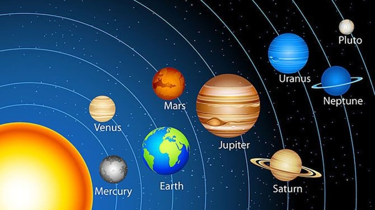
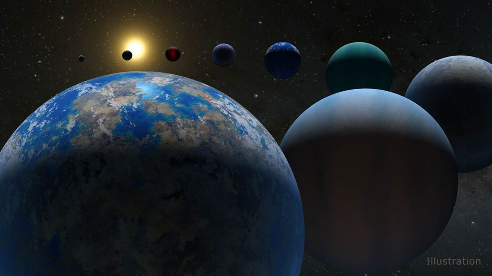
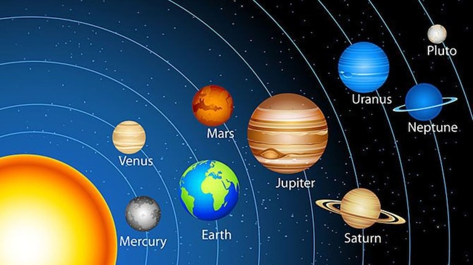
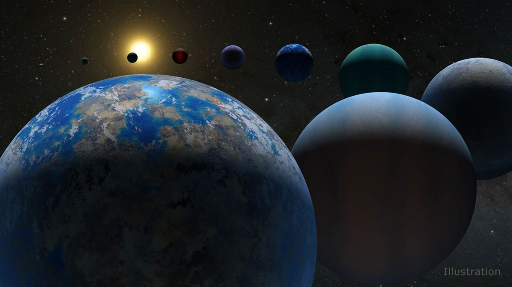

This website is about our galaxy.Our Galaxy has limitless boundaries,which include accountable stars and planets,stars like the sun,black holes the list goes on.Only a little of the known planets are to an extend alike our planet Earth and may be colonized in the future.Not a big perchentage of the galaxy has been explored,yet the search of the unknown comtinues.This assignment was created by 19-yearold student from Metropolitan College.My name is Aristeidis Stagkos,I am from Thessaloniki Greece and I am learning computing in the college.I would like to become a programmer in the future.I came in contact with some astrologers through a research program.I really enjoyed studying the Solar Sytem and about our galaxy.
The Solar System is the gravitationally bound system of the Sun and the objects that orbit it. The Solar System formed 4.6 billion years ago from the gravitational collapse of a giant interstellar molecular cloud. The vast majority (99.86%) of the system's mass is in the Sun, with most of the remaining mass contained in the planet Jupiter. The four inner system planets—Mercury, Venus, Earth and Mars—are terrestrial planets, being composed primarily of rock and metal. The four giant planets of the outer system are substantially larger and more massive than the terrestrials. The two largest, Jupiter and Saturn, are gas giants, being composed mainly of hydrogen and helium; the next two, Uranus and Neptune, are ice giants, being composed mostly of volatile substances with relatively high melting points compared with hydrogen and helium, such as water, ammonia, and methane. All eight planets have nearly circular orbits that lie near the plane of Earth's orbit, called the ecliptic. There are an unknown number of smaller dwarf planets and innumerable small Solar System bodies orbiting the Sun.Six of the major planets, the six largest possible dwarf planets, and many of the smaller bodies are orbited by natural satellites, commonly called "moons" after the Moon. Two natural satellites, Jupiter's moon Ganymede and Saturn's moon Titan, are larger but not more massive than Mercury, the smallest terrestrial planet, and Jupiter's moon Callisto is nearly as large. Each of the giant planets and some smaller bodies are encircled by planetary rings of ice, dust and moonlets. The asteroid belt, which lies between the orbits of Mars and Jupiter, contains objects composed of rock, metal and ice. Beyond Neptune's orbit lie the Kuiper belt and scattered disc, which are populations of objects composed mostly of ice and rock. In the outer reaches of the Solar System lies a class of minor planets called detached objects. There is considerable debate as to how many such objects there will prove to be.Some of these objects are large enough to have rounded under their own gravity and thus to be categorized as dwarf planets. Astronomers generally accept about nine objects as dwarf planets: the asteroid Ceres, the Kuiper-belt objects Pluto, Orcus, Haumea, Quaoar and Makemake, and the scattered-disk objects Gonggong and Eris, and Sedna.Various small-body populations, including comets, centaurs and interplanetary dust clouds, freely travel between the regions of the Solar System.
Earth is the third planet from the Sun and the only astronomical object known to harbor life. While large volumes of water can be found throughout the Solar System, only Earth sustains liquid surface water. About 71% of Earth's surface is made up of the ocean, dwarfing Earth's polar ice, lakes, and rivers. The remaining 29% of Earth's surface is land, consisting of continents and islands. Earth's surface layer is formed of several slowly moving tectonic plates, interacting to produce mountain ranges, volcanoes, and earthquakes. Earth's liquid outer core generates the magnetic field that shapes Earth's magnetosphere, deflecting destructive solar winds. Earth's atmosphere consists mostly of nitrogen and oxygen. More solar energy is received by tropical regions than polar regions and is redistributed by atmospheric and ocean circulation. Water vapor is widely present in the atmosphere and forms clouds that cover most of the planet. Greenhouse gases in the atmosphere like carbon dioxide (CO2) trap a part of the energy from the Sun close to the surface. A region's climate is governed by latitude, but also by elevation and proximity to moderating oceans. Severe weather, such as tropical cyclones, thunderstorms, and heatwaves, occurs in most areas and greatly impacts life. Earth is an ellipsoid with a circumference of about 40,000 km. It is the densest planet in the Solar System. Of the four rocky planets, it is the largest and most massive. Earth is about eight light minutes away from the Sun and orbits it, taking a year (about 365.25 days) to complete one revolution. Earth rotates around its own axis in just less than a day (in about 23 hours and 56 minutes). Earth's axis of rotation is tilted with respect to the perpendicular to its orbital plane around the Sun, producing seasons. Earth is orbited by one permanent natural satellite, the Moon, which orbits Earth at 380,000 km (1.3 light seconds) and is roughly a quarter as wide as Earth. The Moon always faces the Earth with the same side through tidal locking and causes tides, stabilizes Earth's axis, and gradually slows its rotation. Earth formed over 4.5 billion years ago. During the first billion years of Earth's history, the ocean formed and then life developed within it. Life spread globally and began to affect Earth's atmosphere and surface, leading to Earth's Great Oxidation Event two billion years ago. Humans emerged 300,000 years ago, and have reached a population of almost 8 billion today. Humans depend on Earth's biosphere and natural resources for their survival, but have increasingly impacted Earth's environment. Today, humanity's impact on Earth's climate, soils, waters, and ecosystems is unsustainable, threatening people's lives and causing widespread extinction of other life.
 


